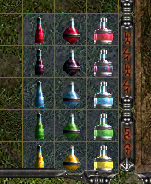

Inicio - Sobre nosotros - Miembros - Guía de Sacred
Las pociones son lo más importante del juego ya que nos pueden ayudar demasiado en el combate, hay cinco pociones en total siendo las siguientes:
Poción curativa: Regenera instantaneamente un porcentaje (indicado por el tipo de poción) de la vida.
Poción de los no muertos: Hace que los no muertos no se levanten más. (Solo afecta a los que son de tipo esqueletos)
Poción del mentor: Aumenta la cantidad de experiencia recibida al matar enemigos.
Antídoto: Dependiendo del tipo, reduce el daño o cura parcialmente/completamente el efecto del veneno recibido.
Poción de concentración: Dependiendo del tipo, regenera parcialmente o completamente todos los combos.
Como se ve en la imagen, existen tres tipos de tamaños de las pociones, las cuales alteran los efectos de la poción.
A continuación habrá una tabla que explica en que afecta cada tamaño a la poción. (No incluye la poción curativa, ya que su porcentaje de curación depende de la dificultad y del tamaño)
| Poción | Chico | Mediano | Grande |
|---|---|---|---|
| No muertos | Nada | Nada | Nada |
| Mentor | ? | ? | ? |
| Antídoto | Reduce el daño del veneno | Cura parcialmente el efecto de veneno | Cura completamente el efecto de veneno |
| Concentración | Regenera un cuarto de todos los combos | Regenera la mitad de todos los combos | Regenera completamente todos los combos |
Ahora va la tabla de la poción de curación, como ya dijimos antes, el porcentaje de curación no es la misma en todas las dificultades.
| Dificultad | Chico | Mediano | Grande |
|---|---|---|---|
| Bronce | 100% | 100% | 100% |
| Plata | 60% | 100% | 100% |
| Oro | 40% | 66% | 100% |
| Platino | 30% | 50% | 75% |
| Niobio | 24% | 40% | 60% |